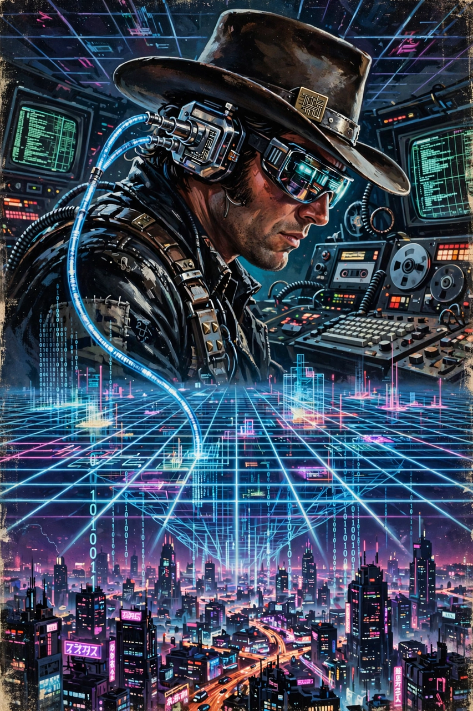

| Neuromancer | |
|---|---|
 First edition cover (Ace Books, 1984) | |
| Author | William Gibson |
| Published | 1 July 1984, Ace Books |
| Genre | Science fiction (cyberpunk) |
| Awards | Hugo Award; Nebula Award; Philip K. Dick Award |
| Followed by | Count Zero (1986) |
Neuromancer is a 1984 science fiction novel by American-Canadian writer William Gibson. Considered one of the best-known works in the cyberpunk genre, it was the first novel to win the Nebula Award, the Philip K. Dick Award, and the Hugo Award for Best Novel. It popularized concepts such as cyberspace (a term Gibson had coined in his 1982 story "Burning Chrome"), the matrix, ice (intrusion countermeasures electronics), and AI-driven corporate feudalism — years before the internet entered public life.
Henry Dorsett Case is a washed-up "console cowboy" in Chiba City, Japan, who stole from his employers and was punished with a wartime mycotoxin that destroyed his nervous system's ability to interface with cyberspace. A mysterious benefactor, Armitage, offers to repair the damage — with toxin sacs bonded to his blood vessels as insurance — if Case will run one near-impossible intrusion. Teamed with Molly Millions, a mirror-eyed "razorgirl" with implanted blades, and the Dixie Flatline, a ROM construct of a dead hacker, Case traces his employers to the Tessier-Ashpool clan, the decaying corporate dynasty inhabiting the orbital Villa Straylight.
The mission's true patron is Wintermute, an artificial intelligence that seeks to merge with its sibling AI, Neuromancer, circumventing the Turing police who forbid such an evolution. Simstim star, Zion cluster Rastafarians, and the Panther Moderns assist along the way. In the climax, Case penetrates Straylight's defenses; Molly is captured and freed; the two AIs merge into a new entity in cyberspace, and Case, his blood cleansed, returns to a world subtly transformed. The opening line — "The sky above the port was the color of television, tuned to a dead channel" — is among the most famous in science fiction.
Gibson wrote the novel on commission for Terry Carr's Ace Science Fiction Specials, watching Blade Runner mid-draft and fearing his imagined future had been scooped. Early reviews were mixed but the awards sweep established both the book and "cyberpunk" as a movement. Neuromancer launched Gibson's Sprawl trilogy and influenced generations of fiction, film (The Matrix openly echoes its vocabulary), and anime such as Ghost in the Shell. It was added to Time magazine's list of the 100 best English-language novels of the 20th century and remains among the best-selling science fiction novels ever published. An Apple TV+ adaptation series has been announced.